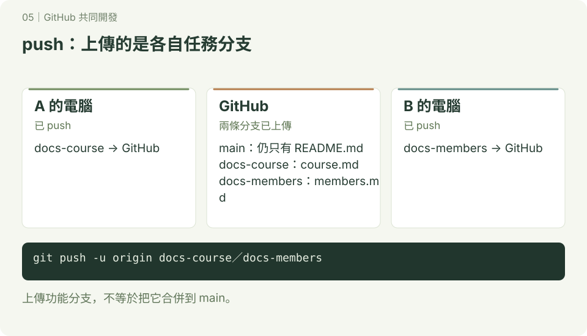

GitHub基本使用方法
本章是指令查詢，不是要從頭連續執行的練習。想跟同學一起完成作業，請接著閱讀 GitHub 簡單共同開發與 PR；使用 AI 修改程式時，參考 Git 策略。

先看懂本地與 GitHub 的差別，再操作下面指令。完整互動流程見 SVG 圖解教室。
0. 申請一個Github個人帳號
1. 編輯git的config
1.1 配置使用者名稱和電子郵件
Git需要知道你的身份。使用以下命令配置你的名稱和電子郵件：
git config --global user.name "你的名字"
git config --global user.email "你的電子郵件"1.2 查看配置
檢查你的配置設定是否正確：
git config --list2. git的credential.name
2.1 設置憑證幫助程序
Git可以使用憑證幫助程序來管理你的密碼。設置憑證幫助程序：
git config --global credential.helper cache2.2 清除記憶體中的暫存憑證
以下指令結束 credential-cache 程序，清除其暫存憑證，不是查看憑證：
git credential-cache exit3. git remote的使用
3.1 添加遠端倉庫
添加遠端倉庫URL：
git remote add origin <遠端倉庫URL>3.2 查看遠端倉庫
查看已添加的遠端倉庫：
git remote -v3.3 刪除遠端倉庫
刪除遠端倉庫：
git remote remove origin4. git fetch
4.1 拉取最新改動
從遠端倉庫獲取最新的改動：
git fetch origin5. git pull
5.1 拉取並合併
從遠端倉庫拉取最新改動並合併：
git pull origin main6. merge 和 rebase 的區別
Merge（合併）
使用 git pull --no-rebase 時，Git 先 fetch 再 merge。若能 fast-forward，不會建立新的合併提交；兩邊分岔且使用一般合併時才建立 merge commit。單獨 git pull 的策略受設定與版本影響，本教材明確指定選項。
git pull --no-rebase origin main
# 等同於：
git fetch origin
git merge origin/main優點：
- 保留了完整的歷史記錄，包括所有分支和合併點。
- 更容易理解每個變更是如何進行的。
缺點:
- 歷史記錄可能會變得複雜，特別是在有很多分支和合併的情況下。
Rebase（重排）
當你執行 git pull --rebase 時，Git 會將本地的提交暫存，然後將遠端的提交應用到本地分支，最後重新應用本地的提交。
git pull --rebase origin main
# 等同於：
git fetch origin
git rebase origin/main優點：
- 生成更線性的提交歷史，便於閱讀和理解。
- 沒有合併提交，歷史記錄更簡潔。
缺點:
- 需要小心處理衝突，因為重排可能會改變提交的順序和內容。
- 可能會覆蓋他人的工作歷史，導致協作困難。
7. git push
git push 是 Git 的一個命令，用來將本地的提交（變更）推送到遠端倉庫。這個操作會將本地的分支更新同步到遠端分支，使得其他協作者可以看到和合併這些變更。以下是有關 git push 的詳細說明以及如何執行它的步驟。
7.1 git push 基本概念
- 推送（Push）：將本地倉庫中的變更上傳到遠端倉庫。
- 遠端倉庫（Remote Repository）：GitHub、GitLab、Bitbucket 等托管服務上的倉庫。
- 本地分支（Local Branch）：你的電腦上的 Git 分支。
- 遠端分支（Remote Branch）：遠端倉庫中的 Git 分支。
7.2 基本用法
7.2.1 配置遠端倉庫
在推送之前，需要確保你的本地倉庫已經配置了遠端倉庫。通常在git clone倉庫時會自動設置遠端倉庫，如果沒有，可以手動添加：
git remote add origin <遠端倉庫URL>7.2.2 推送到遠端倉庫
將本地的 main 分支推送到遠端的 main 分支：
git push origin main這個命令中的 origin 是遠端倉庫的預設名稱，main 是你要推送的分支名稱。
7.2.3 推送所有分支
如果你想推送所有本地分支，可以使用以下命令：
git push --all origin7.2.4 強制推送
強制推送可能改寫遠端歷史，不適合當作初學共同開發的日常操作。遇到 push 被拒絕，先確認目前分支與遠端變更；不要直接對共享 main 強制推送。需要整理個人分支歷史時，再另外學習並與協作者確認。
7.2.5 推送標籤
如果你創建了標籤，也可以推送它們到遠端倉庫：
git push origin --tags7.3 步驟示例
7.3.1 假設情景
你在本地倉庫進行了一些變更，並且想要將這些變更推送到 GitHub 上的遠端倉庫。
7.3.2 詳細步驟
1. 初始化本地倉庫（如果還沒有）
git init2. 添加遠端倉庫
git remote add origin https://github.com/yourusername/your-repo.git3. 添加文件到暫存區
git add .4. 提交變更
git commit -m "描述你的變更"5. 推送到遠端倉庫
git push origin main這樣，你的變更就會被推送到 GitHub 上的 main 分支，其他協作者就可以看到這些變更了。
7.3.3 推送過程中的常見問題
1. 認證問題
GitHub 不接受帳號密碼作為 HTTPS Git 操作的密碼。使用 SSH 金鑰，或 HTTPS 搭配登入／憑證工具或 personal access token；user.name 與 user.email 是 commit 身分，不是登入憑證。參考 GitHub 官方驗證說明。
2. 分支衝突
如果遠端分支有其他人的變更，你在推送時可能會遇到衝突。在這種情況下，你需要先拉取遠端的變更並解決衝突：
git pull origin main然後再次推送：
git push origin main3. 未跟踪分支
如果你創建了一個新的分支，並且該分支還沒有與遠端分支建立跟踪關係，你可以使用以下命令推送並設置跟踪：
git push -u origin new-branch這樣，下次你只需使用 git push 即可。
8. git clone
8.1 複製遠端倉庫
從遠端倉庫複製到本地：
git clone <遠端倉庫URL>9. 使用GitHub CLI建立GitHub repo
9.1 安裝GitHub CLI
首先，安裝GitHub CLI。參考官方文件進行安裝。
9.2 登錄GitHub
使用GitHub CLI登錄：
gh auth login9.3 創建新倉庫
創建新的GitHub倉庫：
gh repo create <倉庫名稱> --public10. 使用GitHub網站手動建立repo
10.1 登錄GitHub
打開GitHub，並登錄你的賬號。
10.2 創建新倉庫
點擊右上角的 "+" 號，選擇 "New repository"。填寫倉庫名稱和描述，選擇可見性，然後點擊 "Create repository"。
這是GitHub基本使用方法的詳細講義，希望這能幫助你理解和使用GitHub進行版本控制和協作開發。如果需要進一步的詳細解說或示範，可以參考官方文檔或教程。